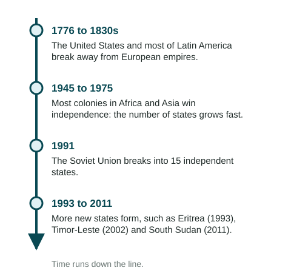
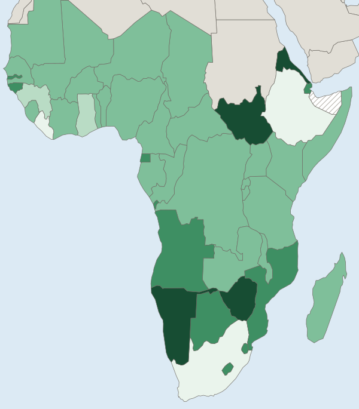

Political Processes
Today's political map is the product of political processes.
Part 1 · Hook
Why this matters
Part 2 · Before you start
What this builds on
Part 3 · Prerequisite check
Quick check before you start
1. What is colonialism?
- One state taking control of another territory and its people, often settling or ruling it directly
- A group of people moving within their own country
- Two states agreeing to trade
- A people sharing one culture
Show the answer
Colonialism is control of a territory and its people by an outside power.
- Correct: One state taking control of another territory and its people, often settling or ruling it directly:
- A group of people moving within their own country:
- Two states agreeing to trade:
- A people sharing one culture:
2. What is a stateless nation?
- A nation with no independent state of its own
- A state with no nations
- A state with many nations
- A nation that lives in one state
Show the answer
The Kurds are a large example.
- Correct: A nation with no independent state of its own:
- A state with no nations:
- A state with many nations:
- A nation that lives in one state:
Part 4 · See it
See it first

Part 5 · Step by step
How it works, step by step
- European empires took colonies and drew their bordersmany peoples were ruled from outside and grouped inside borders they did not choose
- Colonized peoples claimed the right of self-determinationindependence movements grew, and many won sovereign states
- New states mostly kept their colonial bordersthe colonial outline of the map stayed, along with conflicts inside some states
Part 6 · Key ideas
Key ideas
- Sovereignty is a state's right and power to govern its territory without outside control. Self-determination is a people's right to choose its own political status.
- An independence movement is an organized effort by a people under foreign rule to win a state: India in 1947, Ghana in 1957, Algeria in 1962.
- Colonialism and imperialism drew many borders. After independence, most states kept them (Organization of African Unity, 1964).
- Large states can also break apart: the Soviet Union became 15 states in 1991.
Part 7 · Misconception
A common mistake
The wrong idea: Self-determination and sovereignty are the same thing.
What actually happens: Self-determination is a people's claim to choose its government; sovereignty is the control a state holds over its territory. A nation can claim self-determination without having sovereignty.
Part 8 · Check yourself
Check yourself
Exam-style questions. Anything you miss goes into your review queue.
Map
When states in Sub-Saharan Africa became independent

Year the state became independent
- Before 1950
- 1950 to 1959
- 1960 to 1964
- 1965 to 1979
- 1980 or later
- Not shown: Somaliland, whose status is disputed
1. Which pattern does the map show?
- Most states became independent between 1960 and 1964
- Most states became independent before 1950
- Southern Africa became independent before West Africa
- Independence spread from south to north over time
Show the answer
Read the legend first: the 1960 to 1964 class covers most of the map, from Senegal to Tanzania.
- Correct: Most states became independent between 1960 and 1964: Right: The 1960 to 1964 class covers most of West, Central and East Africa.
- Most states became independent before 1950: Only Liberia, Ethiopia and South Africa fall in that class.
- Southern Africa became independent before West Africa: Most of southern Africa is in the later classes.
- Independence spread from south to north over time: The latest states are in the south and northeast, and West Africa came early.
2. Where on the map are most of the states that became independent in 1965 or later?
- Along the coast of West Africa
- In the Congo Basin and the rest of Central Africa
- Spread evenly across the region
- In southern Africa and the Horn of Africa
Show the answer
A strong pattern names where: the later classes cluster in southern Africa (Angola to Namibia) and in the Horn of Africa (Eritrea and Djibouti), with South Sudan nearby.
- Along the coast of West Africa: Most West African coastal states are in the 1960 to 1964 class.
- In the Congo Basin and the rest of Central Africa: The Congo Basin states are in the 1960 to 1964 class.
- Spread evenly across the region: The later classes cluster in the south and northeast.
- Correct: In southern Africa and the Horn of Africa: Right: Angola, Mozambique, Zimbabwe, Namibia, Botswana, Lesotho and Eswatini are in the south; Eritrea, Djibouti and South Sudan are in the northeast.
3. Which process best explains why so many states on the map became independent in the early 1960s?
- The breakup of the Soviet Union and of Yugoslavia into new states
- Large numbers of Europeans moving into African colonies
- Independence movements as European colonial powers weakened
- African peoples voting to join together in larger states
Show the answer
After World War II, independence movements grew stronger and the European colonial powers were weaker. Most of Britain's and France's African colonies became independent around 1960.
- The breakup of the Soviet Union and of Yugoslavia into new states: That happened in 1991 and made states in Europe and Asia.
- Large numbers of Europeans moving into African colonies: Settlers often resisted independence, as in Rhodesia (now Zimbabwe).
- Correct: Independence movements as European colonial powers weakened: Right: Movements for self-rule grew while Britain and France, weakened by the war, gave up most African colonies.
- African peoples voting to join together in larger states: Most new states kept their colonial shapes; few merged.
4. What is sovereignty?
- A people's shared culture, language and history
- A state's right and power to govern its own territory without outside control
- A region's power to run its schools inside a state
- The size of a state's land area and its population
Show the answer
Sovereignty is a state's right and power to govern its own territory and people without control from outside.
- A people's shared culture, language and history: That describes a nation.
- Correct: A state's right and power to govern its own territory without outside control: Right: This is the meaning used in political geography.
- A region's power to run its schools inside a state: That is autonomy, not full sovereignty.
- The size of a state's land area and its population: Sovereignty is about control, not size.
5. How is self-determination different from sovereignty?
- Self-determination is a state's control of territory; sovereignty is a people's right to choose
- They are two names for the same right
- Self-determination applies to cities; sovereignty applies to regions
- One is a people's right to choose its status; the other is a state's control of territory
Show the answer
A nation uses self-determination to seek a state; once it has one, the state holds sovereignty over its territory.
- Self-determination is a state's control of territory; sovereignty is a people's right to choose: This swaps the two.
- They are two names for the same right: They are linked but not the same.
- Self-determination applies to cities; sovereignty applies to regions: Neither is defined by those scales.
- Correct: One is a people's right to choose its status; the other is a state's control of territory: Right: One belongs to peoples (nations), the other to states.
6. Put these events in time order, earliest first.
- Most of Latin America wins independence from Spain and Portugal
- India becomes independent from British rule
- Ghana becomes independent from British rule
- The Soviet Union breaks into 15 states
- South Sudan becomes independent from Sudan
Show the answer
Latin America in the 1810s and 1820s, India in 1947, Ghana in 1957, the Soviet breakup in 1991 and South Sudan in 2011.
- Correct order: 1. Most of Latin America wins independence from Spain and Portugal 2. India becomes independent from British rule 3. Ghana becomes independent from British rule 4. The Soviet Union breaks into 15 states 5. South Sudan becomes independent from Sudan
Part 9 · Summary
Summary
Part 10 · Up next
What comes next
Part 11 · Connections